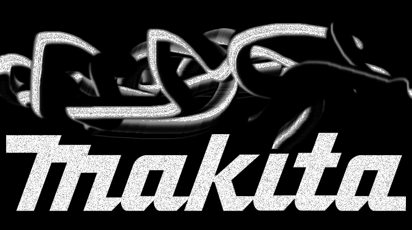
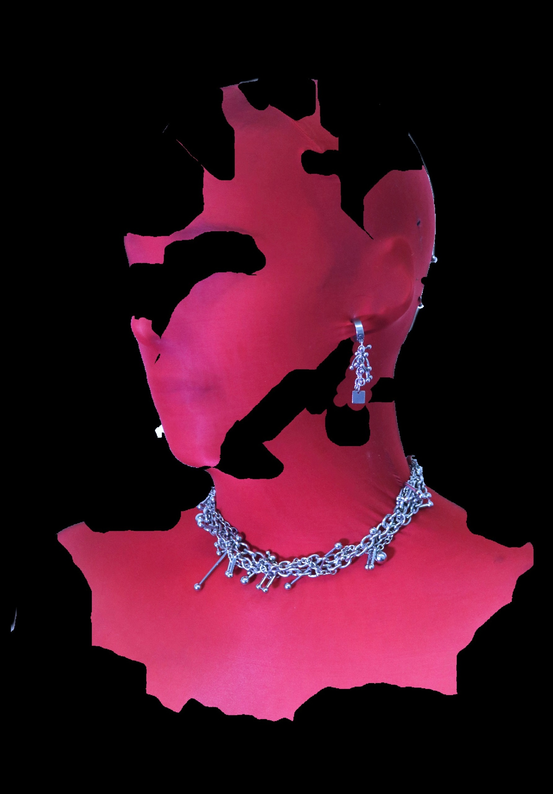

MAKITA EXPLORES HOW EXPERIMENTAL ELECTRONIC MUSIC, THROUGH MELANCHOLIC AND CATHARTIC MELODIES, CAN BE A REFUGE IN A WORLD THAT IS FALLING APART. BASED BETWEEN BERLIN AND BARCELONA, SHE LEFT THE THEATRE, NOISE AND PERFORMANCE PROJECT "WHISKY" IN HER HOMETOWN IN THE NORTH OF ARGENTINA TO TAKE THE HELM IN SOLO PRESENTATIONS OR IN COLLABORATION WITH OTHER MULTIDISCIPLINARY ARTISTS, USING MOSTLY SYNTHESIZERS AND VOCODERS TO CREATE DARK AND DIFFUSE ATMOSPHERES MIXED WITH A BIT OF MELODIC DRAMA AND GOING DEEP INTO BREAKING AND SAMSHING NOSTALGIC SONGS TO TRANSFORM THEM INTO A COMPLETE MESS, RECYCLING OR UPCYCLING SOUNDS AS A WAY OF ECOLOGICAL SQUIZOFRENIC FREEDOM.
